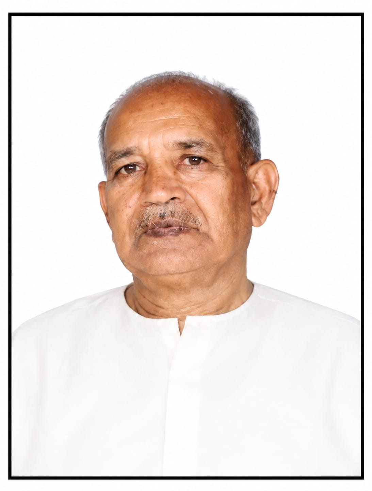

बागमल महाजन मध्य प्रदेश के धार जिले से संबंधित स्वतंत्रता संग्राम सेनानी थे। उनके पिता का नाम हीरालाल महाजन था। वे जैन समाज से संबंधित थे।
1942 के भारत छोड़ो आंदोलन के दौरान धार क्षेत्र में स्वतंत्रता आंदोलन को जनता के बीच संगठित करने और उसका विस्तार करने में बागमल महाजन ने सक्रिय भूमिका निभाई।
बागमल महाजन का संबंध धार, मध्य प्रदेश से था। उनके जीवन का महत्वपूर्ण हिस्सा भारत के स्वतंत्रता संग्राम से जुड़ा रहा।
1942 में जब देशभर में ब्रिटिश शासन के विरुद्ध भारत छोड़ो आंदोलन तेज हुआ, तब धार क्षेत्र में भी स्वतंत्रता और उत्तरदायी शासन की मांग को लेकर आंदोलन संगठित हुआ।
भारत छोड़ो आंदोलन का अखिल भारतीय प्रस्ताव 8 अगस्त 1942 को पारित हुआ और महात्मा गांधी ने इसी दौर में “करो या मरो” का आह्वान किया था।
धार में 1942 का आंदोलन कालूराम विरुलकर के नेतृत्व में संगठित हुआ। 10 अगस्त 1942 को धार में “करो या मरो” के संदेश के साथ आंदोलन को आगे बढ़ाया गया।
आंदोलन का उद्देश्य ब्रिटिश शासन से मुक्ति के साथ-साथ धार राज्य में उत्तरदायी शासन की स्थापना की मांग को मजबूत करना था।
इसी दौर में बागमल महाजन ने धार क्षेत्र में लोगों को एकत्रित किया, उन्हें संगठित किया और स्वतंत्रता आंदोलन से जोड़ा।
उनका कार्य आंदोलन को सीमित कार्यकर्ताओं तक रखने के बजाय अधिक से अधिक लोगों तक पहुँचाना था। उन्होंने जनता को स्वतंत्रता के उद्देश्य से जोड़ा और आंदोलन को व्यापक जनभागीदारी प्रदान करने के लिए लगातार कार्य किया।
धार राज्य लोक परिषद को अवैध घोषित किए जाने और आंदोलन से जुड़े नेताओं पर शासन द्वारा कार्रवाई किए जाने के बाद भी आंदोलन की गतिविधियाँ जारी रहीं।
कालूराम विरुलकर तथा अन्य आंदोलनकारी नेताओं ने धार राज्य के विभिन्न क्षेत्रों में जनजागरण किया और स्वतंत्रता आंदोलन को आगे बढ़ाया।
बागमल महाजन की स्वतंत्रता संग्राम में पहचान विशेष रूप से जनसंगठन और लोगों को आंदोलन से जोड़ने के कार्य से जुड़ी थी।
उन्होंने स्थानीय लोगों को एकत्रित कर स्वतंत्रता आंदोलन की गतिविधियों में भाग लेने के लिए प्रेरित किया। उनके प्रयासों से आंदोलन को धार क्षेत्र में व्यापक सामाजिक आधार मिला।
उनका योगदान उस समय के स्थानीय स्वतंत्रता कार्यकर्ताओं की भूमिका को सामने लाता है, जिन्होंने राष्ट्रीय आंदोलन को स्थानीय स्तर पर जनता तक पहुँचाया।
भारत छोड़ो आंदोलन स्वयं एक व्यापक जनआंदोलन था, जिसमें राष्ट्रीय नेतृत्व के साथ-साथ स्थानीय स्तर के कार्यकर्ताओं की भी महत्वपूर्ण भूमिका रही।
धार में स्वतंत्रता आंदोलन 1942 के बाद भी सक्रिय रहा।
1944 में क्रांतिकारी पंडित सुंदरलाल को धार आमंत्रित किया गया। इसी अवधि में खलघाट में प्रजामंडल का अधिवेशन आयोजित हुआ, जिसमें डॉ. पट्टाभि सीतारमैया प्रमुख वक्ता थे।
धार राज्य में उत्तरदायी शासन की मांग और स्वतंत्रता आंदोलन से संबंधित गतिविधियाँ आगे भी जारी रहीं।
इन घटनाओं के संदर्भ में बागमल महाजन का योगदान धार क्षेत्र के स्थानीय जनसंगठन से जुड़ा हुआ था। कालूराम विरुलकर के नेतृत्व में चल रहे आंदोलन को जनता के बीच पहुँचाने और अधिक लोगों को उससे जोड़ने में उन्होंने सक्रिय कार्य किया।
बागमल महाजन का जीवन धार क्षेत्र में स्वतंत्रता आंदोलन की स्थानीय जनभागीदारी से जुड़ा हुआ है।
1942 के आंदोलन के दौरान कालूराम विरुलकर के नेतृत्व में चल रहे संघर्ष को आगे बढ़ाने के लिए उन्होंने लोगों को संगठित किया और स्वतंत्रता आंदोलन में जनभागीदारी बढ़ाने का कार्य किया।
उनका जीवन इस बात का उदाहरण है कि भारत के स्वतंत्रता संग्राम में राष्ट्रीय नेताओं के साथ-साथ स्थानीय स्तर पर काम करने वाले अनेक कार्यकर्ताओं ने भी जनता को संगठित कर आंदोलन को मजबूत किया।
धार के स्वतंत्रता आंदोलन के इतिहास में बागमल महाजन का नाम स्थानीय जनसंगठन और स्वतंत्रता आंदोलन से जुड़े कार्यकर्ता के रूप में दर्ज किया जाता है।